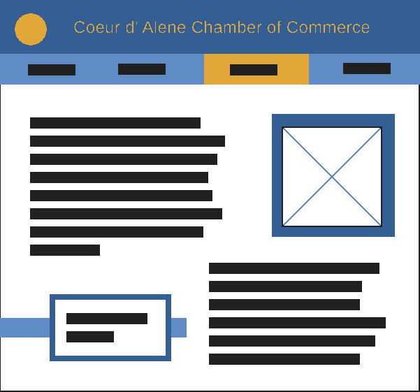

Coeur d'Alene Chamber of Commerce Site Plan
Purpose
The Coeur d'Alene Chamber of Commerce works to create a community of businesses that can improve the local economy by fostering an environment of understanding, improvement and cooperation. Additionally,we strive to advocate for the interests of our member businesses and support a variety of industries through events, charitable works, community activity, and lobbying.
Scenarios
What are the benefits of membership?
What are the responsibilities of each chamber committee?
What public policies are currently being lobbied for?
Color Schema
Primary Color (headers, borders, footers):
#335f95
Secondary Color (navigation, ribbons, secondary borders):
#5f8cc7
Highlight Color (selected buttons/links, items of note):
#e2a739
Typography
Title Font: Mooli
Paragraph Font: Roboto